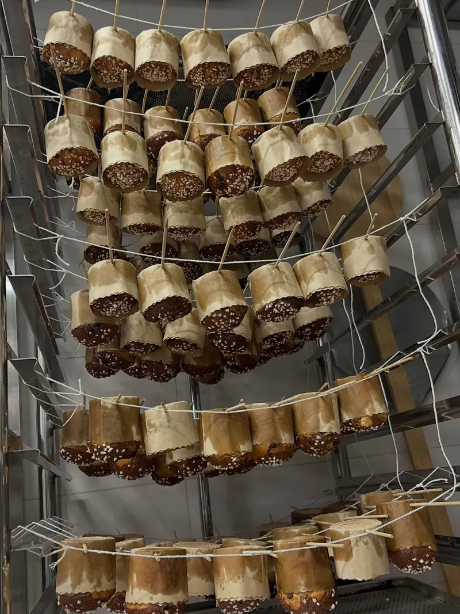

Frente principal
Consultoria de cozinha para restaurantes e cafeterias
Criação e ajuste de receitas de panificação e confeitaria para a sua cozinha, do ponto da massa ao acabamento do prato. Acompanho a rotina da praça e escrevo cada receita de um jeito que a equipe consiga seguir.
- Criação e adaptação de pães, folhados, sobremesas e confeitaria
- Receitas escritas, com gramaturas e passo a passo
- Testes e ajustes na sua cozinha, com os seus equipamentos
- Orientação sobre técnica, textura, ponto e acabamento